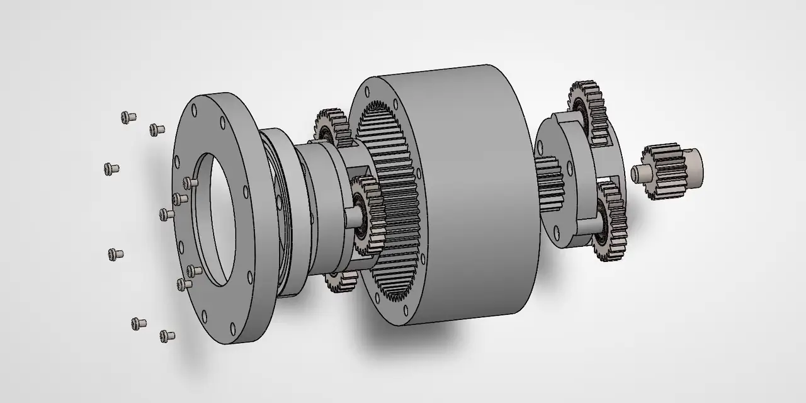
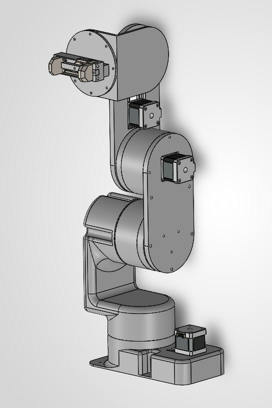
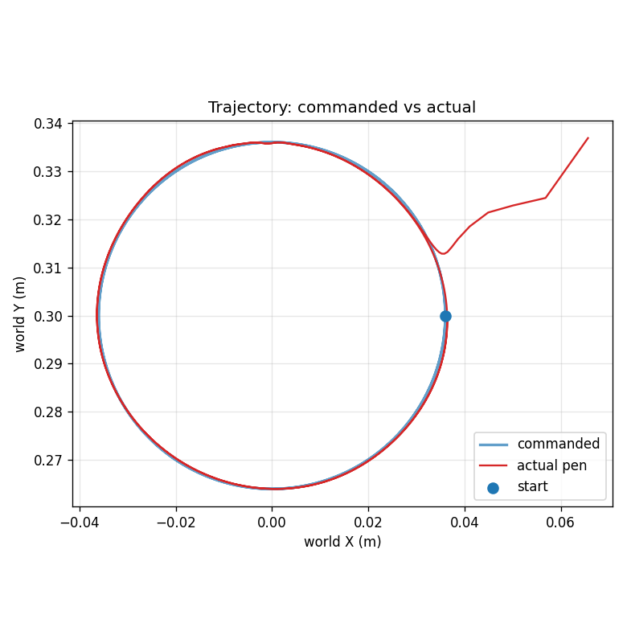

Robotics & mechanical design portfolio
One robot arm, built from the gearbox up.
Four projects, one machine. Each project's output is the next one's input: the actuator drives the arm, the arm's CAD becomes its robot model, and that model is planned for in ROS 2 and trained on in MuJoCo.
- 01 Actuator 2-stage planetary gearbox
- 02 Arm 4-DOF design & 3D print
- 03 Motion ROS 2 pick-and-place, sim to real
- 04 Learning RL policy that draws
About
I'm doing an MSc in Robotics at the University of Manchester, where I also did my BEng in Mechanical Engineering. Outside the course I design robots in SolidWorks, print and wire them myself, and write the software that runs them, from ROS 2 motion planning to reinforcement learning.
Career objective
After the MSc I'm looking for a robotics role in industry, ideally one that covers both the hardware and the software that controls it.
Interests Mechanical design · Sim-to-real transfer · Motion planning · Learning-based control
Hardware
Two-stage planetary actuator
SolidWorks · Gearbox design · 3D printing
CAD · Exploded assembly

- Custom-designed 25:1 two-stage planetary gearbox, 3D printed and driven by a NEMA stepper motor.
- Designed for minimal backlash, producing 9.6 Nm at 55% efficiency.
25:1
Reduction over two planetary stages
9.6 Nm
Output torque
55%
Efficiency
J2 + J3
Drives the arm's shoulder and elbow joints
Feeds into 02
25:1 planetary actuatorthe arm's shoulder and elbow (J2, J3)
Hardware
4-DOF robotic arm: design & 3D print
SolidWorks · DFMA · 3D printing · Steppers & ESP32-S3
CAD · SolidWorks assembly

- 4-DOF arm driven through pulleys and 3D-printed actuators, designed in SolidWorks.
310 mm
Reach
4 + 1
Joints plus an actuated gripper
ESP32-S3
Custom firmware driving four steppers and a servo
| Joint | Motion | Reduction |
|---|---|---|
| J1 | Base yaw | 4:1 |
| J2 | Shoulder pitch | 25:1 planetary |
| J3 | Elbow pitch | 25:1 planetary |
| J4 | Wrist pitch | 6:1 |
Feeds into 03
SolidWorks assemblyURDF robot model for MoveIt 2
Hardware + Simulation
Pick-and-place, from simulation to hardware
ROS 2 Jazzy · MoveIt 2 · ESP32-S3
Hardware
Simulation · RViz 2
- Built a ROS 2 and MoveIt 2 inverse-kinematics pick-and-place motion planning pipeline for a custom 4-DOF 3D-printed arm, using the arm's URDF model, TF2 frames and RViz simulation.
- Deployed the pipeline sim-to-real on hardware, deriving per-joint velocity limits from bench speed sweeps and applying Ruckig jerk-limited smoothing for continuous-acceleration (S-curve) motion.
~10/s → <1/s
Over-limit jerk events after Ruckig smoothing
1×10−15 m
Closed-form IK agreement with an independent MuJoCo model
32.4 → 48.0 s
Physical cycle after halving one joint's planner limit. Only that joint's moves got longer
System architecture
One plan, two interchangeable backends. Swapping simulation for hardware is a launch-file change, not a code change.
- CADSolidWorks
- ModelURDF · SRDF · TF2
- MoveIt 2 OMPL RRTConnect → TOTG → Ruckig
- InterfaceFollowJointTrajectory + GripperCommand
Simulation
- arm_fake_driver
- /joint_states
- RViz 2
Hardware
- traj_driver
- Framed serial
- ESP32-S3 trajectory buffer
- 4 steppers + servo
Feeds into 04
Same arm, same URDFMuJoCo training environment
Simulation
Teaching the arm to draw with reinforcement learning
PPO · MuJoCo · Python
Policy rollout · MuJoCo
Commanded vs actual pen path

- Trained a PPO reinforcement-learning policy in MuJoCo to guide the pen tip of a custom 4-DOF arm along target paths. It reached sub-millimetre (0.5–0.9 mm) mean tracking error and handled shapes it never saw in training with no retraining.
- Built a MuJoCo model of the arm from its SolidWorks URDF, then used domain randomisation, curriculum learning and multi-scale reward shaping to cut tracking error from ~30 mm to 0.55 mm over 23 training iterations.
0.5–0.9 mm
Mean tracking error
~30 → 0.55 mm
Tracking error across 23 training iterations
0
Retraining needed for unseen shapes
Four projects
Gearbox to learned motionthe skills behind it
All four projects
Skills
Grouped by discipline, with the projects that use them.
Robotics & motion planning
03 · 04Reinforcement learning & simulation
04Embedded & electronics
03Programming
03 · 04Project delivery
Languages English (fluent) · Arabic (fluent)